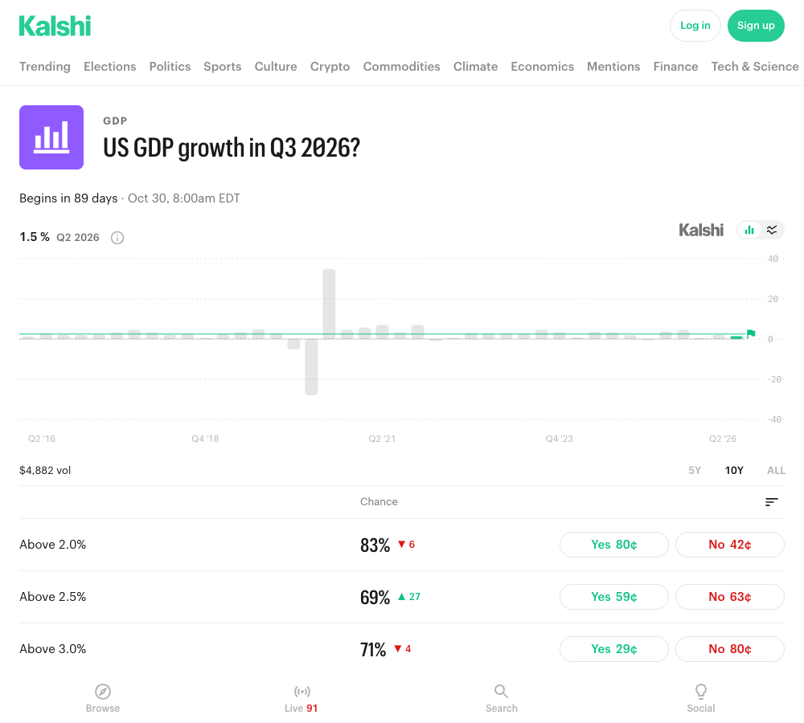
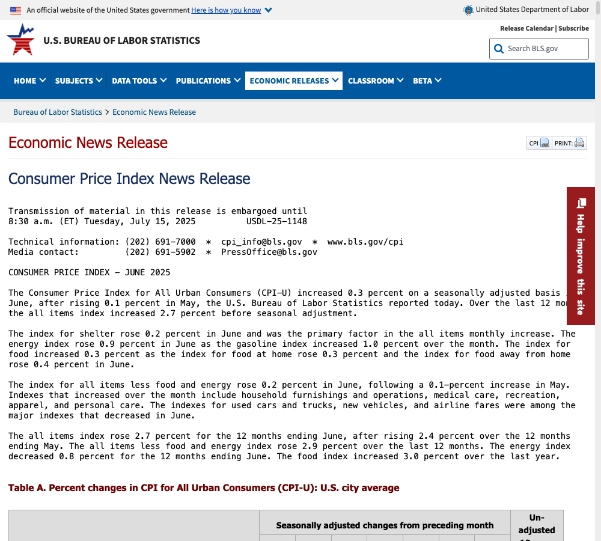
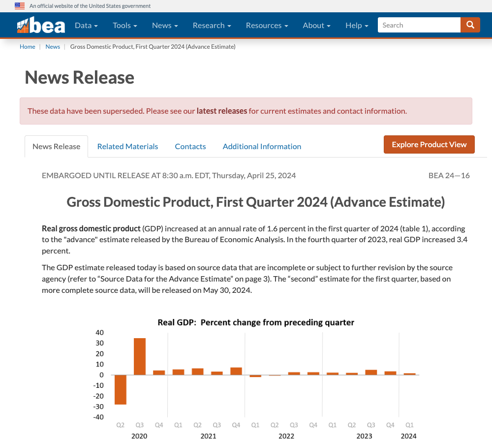
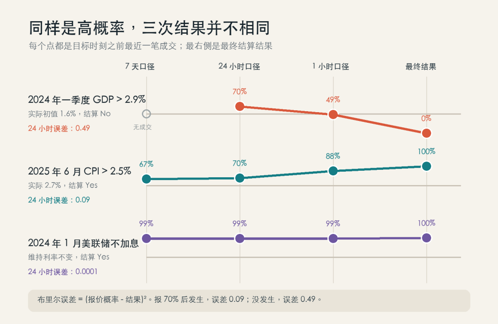
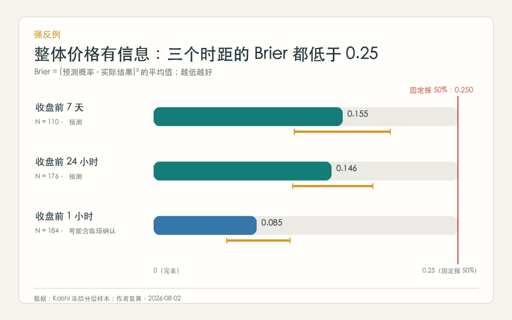
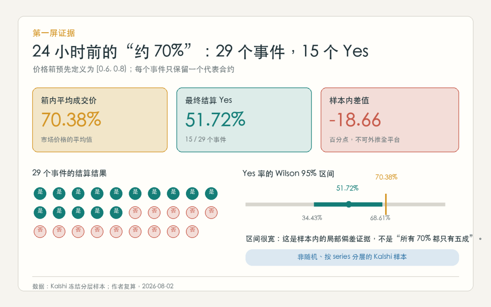
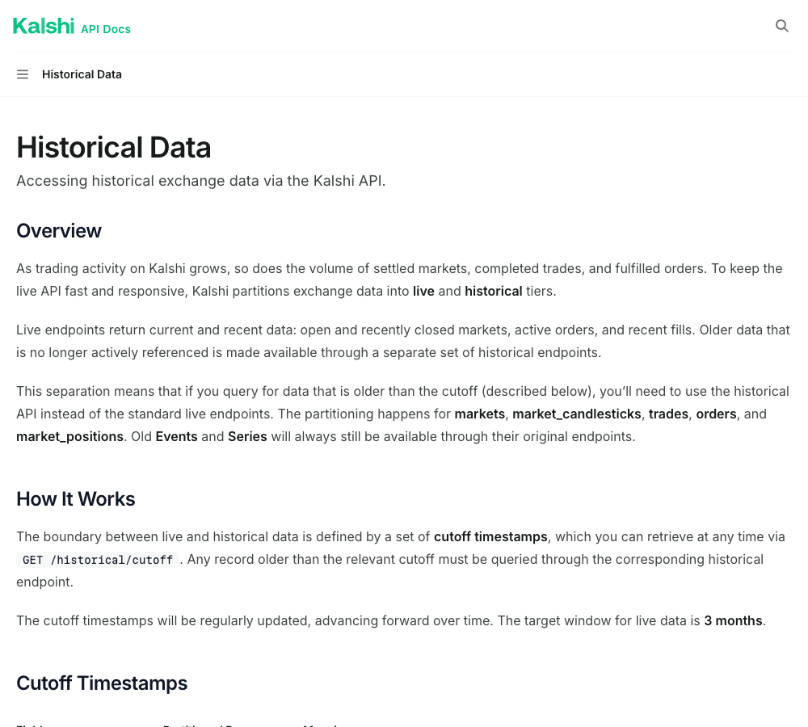
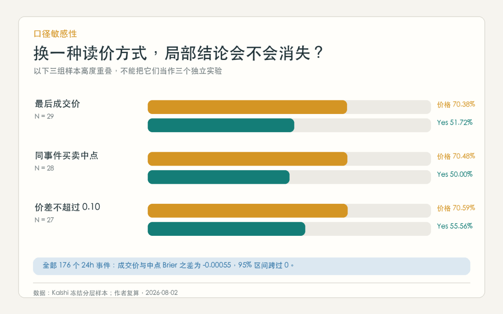

预测市场的70%有多准？我回测了200个事件
我对一个现象产生兴趣时，往往不满足于知道它的名字。
我更想继续往下拆：它是怎样发生的？背后有哪些变量？如果改变一个条件，结果会怎样？
这算是我的一种“本质主义”冲动。看到景区女厕排长队，我不只想说“厕位太少”，而是想知道：排队究竟由厕位数量、游客到达的波动，还是每个人占用设施的时间造成？当这些变量被写进模型，“多建几个”才能变成可比较、可试验的方案。景区里女厕所排队，设计是否可以被优化？
十多年前读《Exploring Everyday Things with R and Ruby》时，我就想用程序探索日常生活。后来读 Stephen Wolfram 的《一种新的科学》，我又逐渐接受一个很有吸引力的直觉：许多看似混乱的现象，可能存在可计算的结构。
这并不是说世界可以被一道公式完整代替。它更像一种探索方式：先把我们习以为常的话拆开，再问其中哪些部分可以被定义、测量、模拟和检验。这也是我写“万物皆可计算”系列的原因。
前三篇，我们尝试重建古代战场的可能过程，史书只写下胜负：我们能用证据与AI复原古代战场吗?模拟了景区厕所的随机排队，也追问过每个构件都合格时，整栋建筑的可靠度应该怎样理解。每个构件都按照规范标准设计和施工，整栋楼有多安全？这一篇是第四篇，我想把同一种追问带到一个看似已经被算好的数字上。
你在群里看到一张预测市场截图：70%。有人说：“市场都这么定价了，这事基本稳了。”也有人说：“不就是一群人在下注吗？”
我想探寻的，正是这个数字的本质：
预测市场显示的 70%，到底是怎样算出来的？它是事件的真实概率，还是一个会随交易变动的价格？我们又能怎样验证它？
先给出短答案：70% 可以是有用的概率近似，但它不是世界直接报出的答案。它首先是一份具体合约在某个时点的价格。要把它读成概率，还要知道合约在赌什么、价格是什么时候形成的、成交是否足够活跃，以及同类价格长期是否真的约有七成兑现。
在厘清预测市场的内在逻辑后，我还会探讨哪些交易策略可能有效，以及如何进一步优化策略。对此更感兴趣的读者，可以直接跳到第九节和第十节。
为了少一点凭感觉，我用 Kalshi 的公开历史接口冻结了 200 个独立事件，再回到它们停止交易前的不同时点，检查当时的价格与最后结果。
这里有一个必须马上说清的地方：200 个事件并不是 200 个“概率为 70%”的事件。它们的价格从接近 0% 到接近 100% 都有。我在每个事件停止交易前 7 天、24 小时和 1 小时各取一次历史价格，因此理论上有 600 个“事件×观察时点”。
其中，停止交易前 24 小时有 176 个可用记录。只有 29 个价格落在 60%-79%，它们的平均价格是 70.38%，最后 15 个结算为 Yes，14 个结算为 No。
而在全部 176 个可用事件中，市场价格的布里尔分数是 0.146，明显好于对所有事件都猜 50% 时的 0.25。
所以，数据没有给出“预测市场神准”或“预测市场无用”这种干脆的口号。它给出的答案更接近真实世界：
市场整体确实聚合了信息；但屏幕上的某个 70%，仍不能脱离合约、时点和交易条件直接搬走。
最常见的二元合约只有两个结局：
事件发生，Yes 合约支付 1 美元； 事件不发生，Yes 合约支付 0 美元。
如果你认为事件发生的概率是 p，那么这份合约的期望支付就是：
text
E[X] = p x 1 + (1 - p) x 0 = p在交易者接近风险中性、费用和价差足够小、市场竞争充分等条件下，合约价格 c 就可能近似这个概率：
text
合约价格 c ≈ 事件概率 p所以，一份 Yes 合约以 0.70 美元成交，被读成“约 70% 概率”并不是乱来。直觉也很简单：如果你认为真实概率高于 70%，你可能愿意花 70 美分买一张最高支付 1 美元的票；如果你认为低于 70%，你更愿意站在另一边。
用天气预报理解“70%”
这里最容易绕进去的地方，是我们习惯用“对或错”理解一个本来就不是百分之百的数字。
假设天气预报说，明天下雨的概率是 70%。明天如果没下雨，这个预报不一定就错了。因为 70% 本来就保留了 30% 的不下雨可能。
真正的检验方法，是把很多个预报为 70% 的日子放在一起。如果长期大约十天有七天下雨，这组预报才可以说是校准的。
预测市场也一样。一场“70%”的合约最后结算为 No，只能说这次买 Yes 的人输了；它不能单独证明 70% 是错的。反过来，某一场结算为 Yes，也不能证明市场真的拥有七成准确率。
为什么偏偏追问 70%？
50% 很容易被理解为“还不知道”，99% 则看上去几乎确定。最容易影响行动的，恰恰是 70% 这种“明显偏向一边，又远没有确定”的数字。
它很容易在人脑中被翻译成“大概稳了”。但如果它真的是校准的 70%，那么每十个类似事件里，本来就应该有大约三个意外落空。
本文也不是先挑出 200 个 70% 的事件。我先固定 200 个价格分布很广的独立事件，再按预先定义的价格区间分组。60%-79% 这组在 24 小时口径下恰好有 29 个事件，平均价格为 70.38%，所以我用“70%”作为读者入口。
麻烦在于，真实页面往往不只有一个数。

图 1：2026 年 8 月 2 日截取的 Kalshi 当前 GDP 市场页面，仅用于说明界面结构，不属于本文冻结历史样本。页面同时出现“Chance”、Yes 买价和 No 买价；它们分别可能来自最近成交和当前报价，不能混为同一个概率。
截图中，同一门槛附近可以同时看到 69% 的“Chance”、59 美分的 Yes 买价和 63 美分的 No 买价。两个买价相加超过 1 美元，并不代表概率超过 100%，而是因为你看到的是两边各自的卖出报价，中间夹着买卖价差。页面上的“概率”、最后成交价和此刻可成交的价格，本来就可能不同。
Manski 的理论工作进一步提醒：市场均衡价格一般不能完整揭示所有交易者的信念分布。Wolfers 与 Zitzewitz 则说明，在一组较强条件下，价格可以接近交易者的平均信念；条件不完全成立时，它仍可能是有用但有偏的近似。
换成人话：预测市场不是让每个人举手投票，再把所有人的概率取平均。有人资金更多，有人更愿意承担风险，有人只愿意在价格很便宜时出手。最后的价格是这些不同力量交易出来的结果，不是对全体人类信念的精确测量。
因此，判断一个 70% 是否可信，不能只盯着这一场。真正能检验的是：
把许多当时报价约 70% 的事件放在一起，最后是否约有七成发生？
这叫作校准。概率不是一场比赛的胜负预言，而是一组同类判断的长期兑现率。
先看一场“市场说对了”的。
这份合约问：截至 2025 年 6 月的十二个月里，美国 CPI 同比涨幅是否高于 2.5%？ 规则指定采用美国劳工统计局公布的一位小数结果。
在停止交易前 24 小时这个目标点之前，程序找到的最近一笔有效成交价是 0.70。这笔成交距目标点约 5.5 小时，当时 Yes 买一、卖一约为 0.67 和 0.75，价差为 0.08。
2025 年 7 月 15 日，美国劳工统计局公布：截至 6 月的十二个月，CPI 上涨 2.7%。2.7% 高于合约门槛 2.5%，因此结算为 Yes。

图 2：BLS 官方公告写明，2025 年 6 月 CPI 环比上涨 0.3%，过去十二个月上涨 2.7%。合约只关心后一项是否高于 2.5%。
如果只看这一场，70% 似乎很准。用后面会解释的布里尔误差来算：
text
(0.70 - 1)^2 = 0.090.09 不算大。但这场兑现并不能证明“70% 就是真的 70%”。因为一个校准良好的 70%，本来就应该有约三成时候落空。概率允许意外发生；否则它就不该叫 70%，而该叫 100%。
再看一场“市场说错了”的。
这份合约问：美国 2024 年一季度实际 GDP 的预估年化增速是否高于 2.9%？ 它不是等后来所有修订结束，而是明确绑定美国经济分析局发布的“预估值”，并使用一位小数。
在 24 小时目标点之前，最近一笔有效成交也是 0.70，但已经距目标点约 16.4 小时；当时 Yes 买一、卖一约为 0.62 和 0.70。到了 1 小时口径，最近一笔可用成交降到 0.49，而且这笔成交仍旧了约 11.4 小时。
这正好说明“最后成交价”的两面性：它确实发生过，却未必代表此刻有人愿意按同样价格成交。
2024 年 4 月 25 日，美国经济分析局公布的预估值是 1.6%，明显低于 2.9%，合约结算为 No。

图 3：BEA 官方页面给出 1.6% 的预估年化增速。页面后来标注这组数据已被后续版本替代，但合约规则绑定的就是当时的预估值，所以后续修订不改变这次结算。
这次 24 小时价格的布里尔误差是：
text
(0.70 - 0)^2 = 0.49同样报 70%，兑现时误差是 0.09，落空时却是 0.49。布里尔分数会更重地惩罚“很有把握却错了”，这也是它比简单数对错更适合评价概率的原因。
但这场落空同样不能单独证明 70% 失真。一个真正的 70% 预测，十次里本来就允许大约三次像这样失败。单次结果只能判合约输赢，不能判概率是否校准。
第三场的合约问：美联储在 2024 年 1 月会议上是否“不加息”？
在 7 天、24 小时和 1 小时三个口径里，最近可用成交价都是 0.99，买卖价差约 0.01。2024 年 1 月 31 日，美联储把联邦基金利率目标区间维持在 5.25%-5.50%，合约结算为 Yes。
它的误差只有：
text
(0.99 - 1)^2 = 0.0001
图 4：三条线来自冻结 CSV。每个点是目标时刻之前最近一笔成交，所以点可能早于“7 天、24 小时、1 小时”目标本身；GDP 的 7 天口径没有合格成交。最右侧是最终结算。
这三场放在一起，能解释一个看似矛盾的结果：局部 70% 档可能偏高，整体布里尔分数仍然很好。
因为整体样本里还有很多接近 0% 或 100% 且最终兑现的判断。24 小时样本中：
0%-19% 价格箱的平均价格约 5.41%，实际 Yes 率约 8.47%； 80%-100% 价格箱的平均价格约 92.17%，实际 Yes 率约 90.24%。
这些极端价格贡献了大量很小的平方误差，足以与中间某一档的偏差同时存在。所以，“市场总体有信息”和“这个 70% 能否直读”并不是互相否定的两句话。
布里尔分数的公式并不复杂：
text
BS = [所有 (p_i - y_i)^2 的总和] / N其中：
pᵢ是第 i个事件当时的预测概率；yᵢ是最终结果，发生记为 1，不发生记为 0； N是事件数量。
可以把它理解成：先量出每个概率离最后答案有多远，平方后再求平均。 平方会放大自信的错误，也会奖励接近 0 或 1 且判断正确的价格。
如果不看任何信息，所有事件都固定报 50%，那么无论最后 Yes 还是 No，每次误差都是：
text
(0.5 - 1)^2 = (0.5 - 0)^2 = 0.25因此，0.25 可以作为一个直观的“什么都不知道”基准。
本文冻结样本的结果是：
停止交易前 7 天：N=110，布里尔分数 0.155； 停止交易前 24 小时：N=176，布里尔分数 0.146； 停止交易前 1 小时：N=184，布里尔分数 0.085。

图 5：三个分数都低于 0.25。越靠近停止交易，误差越低；但临近结果时可能已经进入“现场判断”，不能把 1 小时低误差包装成长期预测能力。
再单独看预先定义的 60%-79% 价格箱：
7 天口径：28 个事件，平均价格 70.57%，14 个 Yes； 24 小时口径：29 个事件，平均价格 70.38%，15 个 Yes； 1 小时口径：21 个事件，平均价格 71.62%，10 个 Yes。

图 6：24 小时箱的样本内发生率为 51.72%，但 Wilson 95% 区间为 34.43%-68.61%。样本不大，区间很宽，不能外推成所有预测市场的通则。
这个区间可以通俗地理解为：我们手里只有 29 次观察，像隔着一层很厚的雾看真实发生率。51.72% 是这一小批样本恰好给出的点，而 34.43%-68.61% 才更能表达我们目前的不确定程度。
这里最值得警惕的不是 51.72% 这个小数，而是它看起来过于精确。29 个事件只多一次或少一次 Yes，比例就会变化约 3.45 个百分点；其中 24 个还来自经济系列，同一类数据发布可能共享相似误差。
更准确的结论是：在这份非随机、经济事件占多数的冻结样本里，约 70% 这一档表现出偏高迹象；证据还不足以把偏差大小说成平台的长期常数。
回测最容易犯的错误，是在结果公布后拿到一根更晚的价格，再假装它属于结果公布前。项目里的核心函数只允许使用目标时点之前的 K 线：
python
def latest_before(candles, target_ts, getter): candidates = [] for candle in candles: end_ts = int(candle.get("end_period_ts") or 0) if end_ts > target_ts: continue value = getter(candle) if value is not None: candidates.append((end_ts, value)) if not candidates: return None, None end_ts, value = max(candidates, key=lambda item: item[0]) return value, (target_ts - end_ts) / 3600关键只有一行：if end_ts > target_ts: continue。只要 K 线结束时间晚于目标时点，就跳过。函数还返回价格“旧了多少小时”，这样陈旧成交不会被伪装成实时共识。
评分和约 70% 分箱也直接写在项目代码里：
python
def brier(rows, price_field): return statistics.fmean( (float(row[price_field]) - int(row["outcome"])) ** 2 for row in rows ) selected = [ row for row in rows if 0.6 <= float(row["trade_price"]) < 0.8 ]这里没有先看结果再改范围。60%-79% 是预先定义的“约 70%”操作口径，Yes 和 No 都会被同样保留。

图 7：Kalshi 官方文档把实时数据与历史数据分层，旧市场和 K 线需要走历史接口。截图用于说明数据取得路径；正文结论来自冻结文件，而不是页面当下状态。
完整流程是：从 13 个系列中冻结 200 个独立事件，每个系列最多 20 个；每个事件只保留最终成交量最高的一份合约；再在停止交易前 7 天、24 小时和 1 小时各取一次不晚于目标时点的最后成交价。没有合格价格就保持缺失，不用 0、0.5 或最终结算值补齐。
样本清单的 SHA-256 如下：
text
e7419f0dc5e01c9b5232b5972c073c4846c03b60e51c966d00f0af0c946e0d5c600 条事件-时距观测全部唯一，三个布里尔分数已从原始 CSV 独立复算；五个类别各抽一条官方 K 线回查，5/5 与冻结记录一致。
可复算不代表样本天然无偏。它只意味着：别人可以沿同一路径重做，并指出问题究竟出在抽样、读价、公式还是解释，而不是只能相信一张结果图。
本文主分析使用最后成交价，因为它是真实发生过的交易。但最后成交可能已经很旧。另一种常见读法是取 Yes 买一和卖一的中点，它更接近当前订单簿，却不一定真能以那个价格成交。
我做了两组敏感性检查：
把同一批事件的最后成交价换成买卖中点。24 小时全部 176 个事件里，两种口径的布里尔差为 -0.00055，事件 bootstrap 的 95% 区间为 -0.00730 到 0.00572，跨过 0；没有证据表明其中一种整体明显更好。 只保留价差不超过 0.10 的事件。24 小时约 70% 箱从 29 个变成 27 个，其中 15 个结算 Yes，发生率为 55.56%。偏差缩小，但没有消失。
这里的 bootstrap 不是另一种神秘预测法。它只是让电脑从现有事件中反复重新抽样，看“中点和成交价谁更好”这个结论会不会随抽样大幅摇摆。区间跨过 0，意味着现有数据不足以分出明显胜负。

图 8：三组样本高度重叠，是同一批数据的稳健性检查，不是三个可以相加的独立实验。
所以，截图上一个精确到个位数的百分比，可能只是界面精度，不是认识精度。至少要再问：它是最近成交、买卖中点，还是平台计算的展示概率？上一笔成交有多久？价差有多宽？
样本里还有一份美国政府停摆合约。24 小时口径的成交价是 0.79，最后结算 Yes。
但它真正结算的并不是“普通人感觉政府算不算停摆”，而是一个非常具体的可核验条件：2025 年 10 月 1 日美东时间上午 10 点，美国人事管理局网站是否因拨款中断发布政府停摆通知。
这类合约可能很好地预测规则定义的结果，却被只看短标题的人误读。天气合约也一样：它可能绑定某座机场、某个气象站、某个日期的最终日报，而不是“我家附近今天有没有下雨”。
于是，价格与最后的 Yes/No 不一致时，至少要区分四种问题：
- 预测误差
：市场在当时确实判断错了； - 读价误差
：我们拿了陈旧成交、宽价差或错误时点； - 抽样误差
：选到的系列、代表合约和缺失样本改变了统计结果； - 语义与治理误差
：读者理解的事件，与规则真正结算的事件不是同一个对象。
如果不先分类，一次陈旧成交会被叫作“集体判断失败”，一条含糊标题会被叫作“错误结算”，一份局部样本也会被包装成“市场真相”。
说到这里，一个很自然的问题是：既然我们检查了 200 个独立事件，是不是就能知道应该怎样下注？
短答案是：这份数据能帮我们建立更好的决策纪律，却不能直接生成一套稳定赚钱的策略。
“市场整体预测得怎么样”与“我能不能比市场赚得更多”，是两个不同的问题。Wolfers 与 Zitzewitz（2006）给出的理论结论也是有条件的：预测市场价格通常是平均信念的有用近似，但仍可能有偏。换句话说，市场可以不完美，同时又比多数随手判断更难战胜。
这里所说的“可能有效”，不是指某个口诀能够保证盈利，而是指它至少提出了一种可以解释、事前记录、样本外检验的优势来源。最终还必须扣除价差、手续费、滑点和资金占用。
策略一：价值下注，买的不是 Yes，而是“概率差”
最容易理解的策略，是先独立估计事件发生概率，再与实际成交成本比较。
假设 Yes 合约当前真正可以买到的价格是 c，你根据独立信息估计事件发生概率为 q。每份合约在到期时支付 1 或 0，因此不考虑资金时间价值时：
text
毛期望收益 = q - c 净期望收益 ≈ q - c - 手续费 - 滑点 - 资金占用成本例如，页面显示约 70%，但 Yes 的实际卖价是 0.72。你用一套事先确定的方法估计为 0.78，并为手续费、滑点和模型误差合计预留 0.03，那么剩下的净优势只有：
text
0.78 - 0.72 - 0.03 = 0.03这不是说这次一定赢。即使 78% 完全正确，仍然有 22% 的概率输掉本金。只有当概率估计确实更好、成本估计没有漏项，并且同类判断能重复很多次时，这 3 个百分点才可能成为长期优势。
如果你只是凭新闻印象把 70% 改成 72%，这点差异通常不够支付错误。此时最合理的策略不是强行选 Yes 或 No，而是不交易。
策略二：寻找系统性偏差，而不是追逐一次“看错”
第二种策略，是寻找市场在某一类合约中反复出现的校准偏差。
Page 与 Clemen（2013）在大样本中发现，离到期较远时，预测市场更容易出现“热门与冷门偏差”：高概率事件可能被低估，低概率事件可能被高估；临近到期时，整体校准会改善。但论文同时指出，考虑资金的时间价值后，这种偏差不一定能转化为可观的超额收益。
本文的 15/29 也只能算一条类似的研究线索，不能直接变成“看到 70% 就买 No”的规则。因为这 29 个事件中有 24 个来自经济系列，它们可能共享数据发布时间、交易者群体和误差来源。
要把校准偏差升级成策略，至少要先固定：
哪一类事件； 距离结算还有多久； 使用成交价、买卖中点还是实际卖价； 偏差超过多少才交易； 用哪一批未来事件做样本外验证。
如果规则是在看完结果以后才总结出来的，它更可能是对历史噪声的解释，而不是下一次还能使用的优势。
策略三：套利与相对价值，先检查是不是同一件事
第三种策略不是判断事件会不会发生，而是寻找彼此矛盾的价格。
最简单的二元例子是：若完全相同结算规则的 Yes 与 No 可以分别以 y 和 n 买入，并且：
text
y + n + 全部交易成本 < 1那么无论结果如何，两边合计都会支付 1，理论上存在锁定差价。多选题市场也类似：如果所有互斥且穷尽的结果都可以买入，而总成本低于 1，也可能出现组合套利。
但现实中最危险的词是“完全相同”。两个平台看似在问同一事件，结算时区、数据源、修订值、取消规则和争议处理可能不同；即使规则相同，也可能只成交一条腿，另一边价格瞬间消失。Rothschild 与 Sethi（2016）在 Intrade 的 6300 个账户中确实观察到低方向暴露、持仓短暂的套利型策略，但这说明市场里存在这种交易生态，并不等于屏幕上的每个价差都能无风险兑现。
在单一二元订单簿里，还要先读懂互补关系。以 Kalshi 的公开文档为例，Yes 报价与 No 报价互为另一侧的买卖盘：Yes 买价 X 等价于 No 卖价 1-X。不理解这个结构，很容易把正常价差误认成套利机会。
策略四：挂限价单赚价差，本质是在出售流动性
第四种策略是不急着判断最终结果，而是在买卖盘两侧挂限价单，希望以较低价格买入、较高价格卖出，赚取价差。
它听上去比押方向稳妥，风险却只是换了形状：当重要消息先被别人看到时，你的旧报价可能立刻被吃掉；如果库存长期偏向 Yes 或 No，最终结算会把暂时的账面价差变成方向性损失；临近结算时，这种库存风险会迅速放大。
一篇 2026 年的最新预印本把预测市场做市建模为随机控制问题，得到的核心结论很直观：合理报价必须随库存、市场信念、距结算时间和风险厌恶程度变化，不能机械地在中间价两边各挂一档（Feil & Nendel, 2026）。这项研究仍是预印本，适合说明风险结构，不应当被当作已经实证验证的获利配方。
平台费用也会改变结论。Kalshi 官方说明显示，不同市场的费用可能不同，一些市场还收取 maker 费用；挂单只有真正成交才收费，撤单本身不收费。因此，“挂单就是免手续费”并不是通用规则。
策略五：用公开信息更新概率，而不是只追价格
第五种策略是建立自己的信息更新流程。例如经济合约可以预先整理官方发布日历、调查分布、历史修订规律和合约结算口径；天气合约则要锁定指定气象站、观测时间和最终报告。
重点不是比所有人更早刷到一条新闻，而是把新证据转换成概率：这条证据在事件发生时出现的可能性有多大？在事件不发生时又有多大？它应该让原来的概率上调多少？
这类策略只能使用合法、可公开取得的信息。CFTC 的客户指引要求交易者核对合约条款、结算方式、费用与风险，也明确强调受监管市场需要防范操纵和内幕交易。所谓“信息优势”不能建立在非公开信息、未经授权的数据或影响结算结果的行为上。
还有一种用途：不是盈利，而是对冲
预测合约也可以用来抵消现实中的风险。比如某项天气、政策或经济数据会给自己的业务造成损失，就可以考虑建立在该结果发生时获利的头寸。
这时评价策略的标准不只是“这笔合约赚了多少钱”，而是“合约收益是否在坏情景中补偿了现实损失”。它和保险更接近，也提醒我们：预测市场不只是在猜输赢，还可以是一种风险转移工具。
如果把上面的方法写成程序，最容易犯的错是先优化历史收益，再补解释。更稳妥的顺序刚好相反。
第一步：把所有成本放进同一个价格
页面概率不能直接进入期望收益公式。应该先得到“有效买入成本”：
text
有效成本 = 实际卖价 + 手续费 + 预期滑点 + 资金占用成本价差较宽、订单簿较薄或离结算较远时，这个有效成本可能明显高于页面上的展示概率。只有自己的概率估计超过有效成本，交易才有正的毛期望。
第二步：承认自己的概率也有误差
若模型估计为 78%，并不代表真实概率精确等于 78%。样本很少、输入陈旧或事件规则复杂时，可以把自己的估计向市场价格收缩：
text
用于决策的概率 = w x 自己的估计 + (1 - w) x 市场概率其中 w 不是信心口号，而应由历史样本外表现决定。证据越弱，w 越小；没有可验证优势时，w 应接近 0。这是一种保守的工程化处理，不是证明市场永远正确。
第三步：有优势，也不要一次押满
凯利准则试图最大化资金的长期对数增长。对一份最终支付 1、有效买入成本为 c、自己估计概率为 q 的 Yes 合约，若把 f 理解为投入该交易的资金占总资金的比例，则完整凯利比例为：
text
f* = (q - c) / (1 - c), 当 q > c f* = 0, 当 q <= c例如 q=0.78、c=0.75 时，完整凯利只给出 0.03/0.25=12%，并不是“有 78% 把握就押 78% 的资金”。
但完整凯利假设 q 可信，现实中这一点往往不成立。Beygelzimer、Langford 与 Pennock（2012）从预测市场学习角度解释了分数凯利的意义；Busseti、Ryu 与 Boyd（2016）进一步把回撤概率直接加入约束；Sun 与 Boyd（2018）则研究了概率分布不确定时的稳健凯利。共同启示不是某个固定比例，而是：仓位必须随着估计误差和可承受回撤一起缩小。
下面这段代码只把计算关系写清楚，不给出推荐仓位：
python
def yes_trade(q, ask, fees, slippage, capital_cost, kelly_fraction): effective_cost = ask + fees + slippage + capital_cost edge = q - effective_cost if edge <= 0 or effective_cost >= 1: return {"edge": edge, "bankroll_fraction": 0.0} full_kelly = edge / (1 - effective_cost) size = kelly_fraction * full_kelly return {"edge": edge, "bankroll_fraction": max(0.0, size)}kelly_fraction 代表主动缩减后的风险预算，不存在适合所有人的固定值。代码也没有处理税务、成交深度、相关头寸和极端跳价，因此只能作为教学骨架。
第四步：不要把十个相关事件当成十次分散下注
“美联储降息”“通胀下降”“失业率上升”和“经济衰退”可能由同一组宏观冲击驱动。分别买十份合约，并不意味着风险被分散了。
优化时应按共同风险来源分组，限制单一主题、同一结算来源和同一时间窗口的总敞口。套利组合也要把两条腿作为一个整体记录，不能只展示成交成功的一边。
第五步：让策略先在未来数据上活下来
一套可检验流程至少要同时保存：
事前市场价格与真实可成交价格； 事前写下的个人概率与依据； 手续费、滑点、持仓时间和未成交记录； 结算结果、布里尔分数、净收益与最大回撤； 样本内开发期和样本外验证期。
策略如果只在已经看过的 200 个事件上有效，就还不是策略。只有规则冻结后，在新的事件上仍能稳定改善布里尔分数，并在扣除全部成本后保留正收益，才有资格被称作暂时存在的优势。
200 个事件给我的最实用帮助，不是让我更敢下注，而是让我更清楚：
下注之前先证明自己拥有哪一种优势；优势不能被记录、复算和样本外验证时，不下注就是一种完整策略。
本节讨论概率、交易机制与风险控制，不构成针对任何人、平台或合约的投资、博彩或法律建议。
预测市场的价值，不是替人停止思考，而是把含糊判断压缩成可以交易、结算和回测的数字。
数字越醒目，越要把它放回生成过程：
图 9：先核对合约、价格口径、时间、流动性与结算来源。这是一张读数检查卡，不是下注或投资指南。
这五问不是为了否定市场。恰恰相反，只有合约写清、价格读准、时点固定、流动性可见、结算路径可核验，价格才更有资格被当作概率信息。
本文的 200 个事件没有给出一句漂亮反转，而是给出一个更有用的读法：
不要说“世界给出了 70%”。更准确地说：在这份合约、这个时点、这种报价与结算规则下，市场曾以约 70 美分成交。接下来，还要看同类判断长期是否兑现。
这个说法少了一点确定感，却多了一点可以复算的判断力。
“万物皆可计算”不等于“万物都可以被精确预言”。对预测市场来说，计算的价值不是消灭不确定，而是把不确定从一句“我觉得会发生”，变成能够被记录、比较和事后检验的数字。
当我们愿意继续追问这个数字是怎样产生的，它就不再只是一张用来转发的截图，而变成了一个可以帮助我们理解信息、风险和决策的小型实验室。
- 已确认事实
：冻结样本包含 200 个独立事件和 600 个事件-时距观测；三个主口径布里尔分数均低于 0.25；24 小时的 60%-79% 箱为 15/29 个 Yes。CPI、GDP、美联储和政府停摆四个案例的价格、规则与结算结果均来自冻结观测和官方来源。 - 作者判断
：价格的概率含义应被理解为附着于合约、报价、时点、流动性和结算程序的条件近似。 - 强反例
：全部 176 个 24 小时事件的布里尔分数为 0.146，说明市场在本样本中有明显信息价值；不能把局部约 70% 箱改写成“预测市场无用”。 - 不确定性
：样本非随机，类别和年份不均衡，约 70% 箱以经济系列为主，区间没有额外做系列聚类修正；结果不能外推到 Kalshi 全平台、其他时期或其他预测市场。
本文只讨论概率解释与校准，不提供下注或投资建议。
Brier, G. W. (1950). Verification of forecasts expressed in terms of probability. Monthly Weather Review, 78(1), 1-3. DOI078%3C0001:VOFEIT%3E2.0.CO;2) Wolfers, J., & Zitzewitz, E. (2004). Prediction markets. Journal of Economic Perspectives, 18(2), 107-126. DOI Manski, C. F. (2004). Interpreting the predictions of prediction markets. NBER Working Paper 10359. NBER Wolfers, J., & Zitzewitz, E. (2006). Interpreting prediction market prices as probabilities. NBER Working Paper 12200. NBER Kalshi. Historical data API documentation. 官方文档 Kalshi. How are prices determined? 官方帮助 U.S. Bureau of Labor Statistics. (2025-07-15). Consumer Price Index - June 2025. 官方公告 U.S. Bureau of Economic Analysis. (2024-04-25). Gross Domestic Product, First Quarter 2024 (Advance Estimate). 官方公告 Board of Governors of the Federal Reserve System. (2024-01-31). Implementation Note issued January 31, 2024. 官方公告 U.S. Commodity Futures Trading Commission. (2023-09-29). KalshiEX emergency rule filing concerning delayed source data. 官方文件 U.S. Commodity Futures Trading Commission. (2025-11-03). KalshiEX emergency election resolution filing. 官方文件 U.S. Commodity Futures Trading Commission. (2026-02-25). Event-contract enforcement advisory and case summary. 官方文件 The Economist. (2026-07-23). Prediction markets need better rules. 原文。作为问题入口；本文数据结论来自作者冻结实验与官方材料。 Page, L., & Clemen, R. T. (2013). Do prediction markets produce well-calibrated probability forecasts? The Economic Journal, 123(568), 491-513. DOI Rothschild, D. M., & Sethi, R. (2016). Trading strategies and market microstructure: Evidence from a prediction market. The Journal of Prediction Markets, 10(1), 1-29. SSRN Kelly, J. L., Jr. (1956). A new interpretation of information rate. Bell System Technical Journal, 35(4), 917-926. DOI Beygelzimer, A., Langford, J., & Pennock, D. (2012). Learning performance of prediction markets with Kelly bettors. arXiv Busseti, E., Ryu, E. K., & Boyd, S. (2016). Risk-constrained Kelly gambling. arXiv Sun, Q., & Boyd, S. (2018). Distributional robust Kelly gambling: Optimal strategy under uncertainty in the long-run. arXiv Feil, D., & Nendel, M. (2026). Optimal market making in prediction markets. arXiv 预印本 Kalshi. (2026). Fees. 官方帮助 Kalshi. (2026). Orderbook responses. 官方 API 文档 U.S. Commodity Futures Trading Commission. (2026). Understanding prediction markets and event contracts. 官方客户指引
如果同一事件同时出现在预测市场、民意调查、专家预测和大模型判断里，怎样建立一套不偏袒任何来源的实时校准账本？